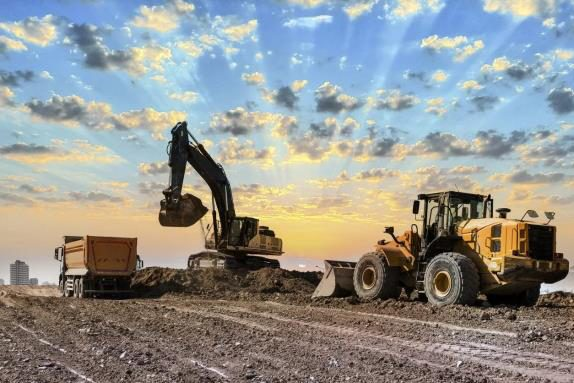
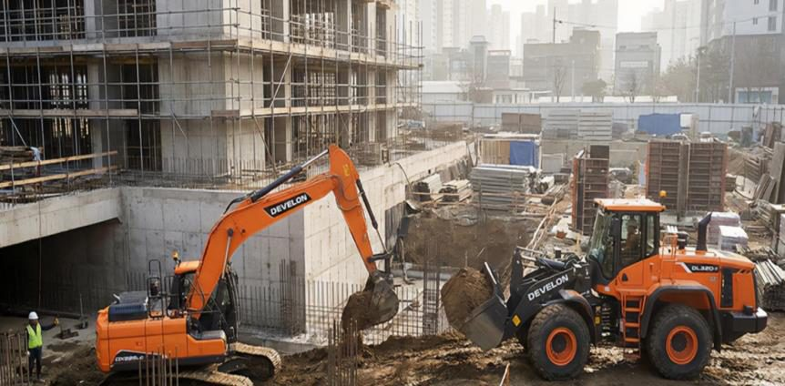
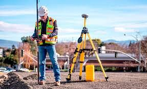
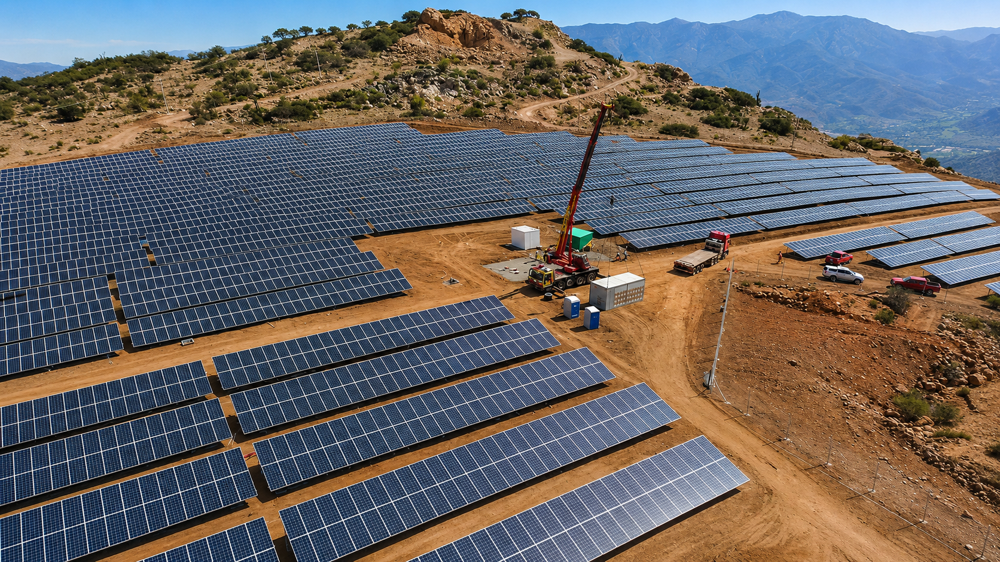
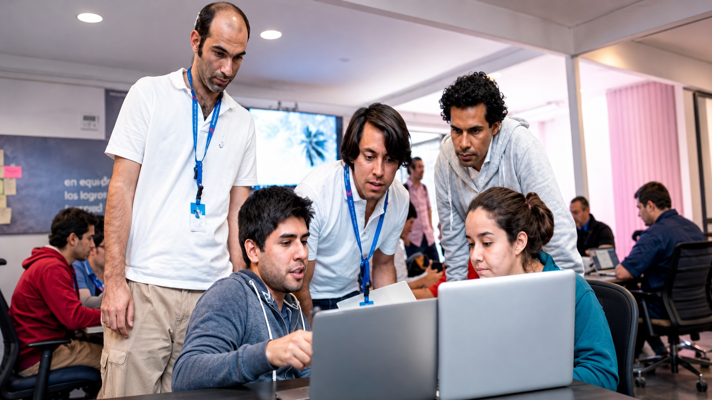

01
Arriendo de maquinaria y movimiento de tierra
Excavadoras, retroexcavadoras, camiones tolva, motoniveladoras, rodillo D12, bulldozer, cargador frontal y mini cargador.
SERVIMAK SPA · SERVICIOS INDUSTRIALES
Acompañamos proyectos desde la planificación técnica hasta la ejecución en terreno, integrando maquinaria, movimiento de tierra, obras civiles, estructuras metálicas, geotecnia y topografía.
Quiénes somos
Servimak SpA entrega soluciones para proyectos industriales, obras civiles y faenas que requieren coordinación técnica, maquinaria,electricidad, asesoría, control en terreno y profesionales de apoyo.
Nuestra propuesta combina planificación, ejecución y seguimiento, priorizando respuestas prácticas para convertir requerimientos de obra en soluciones reales.
Especialidades
Áreas de trabajo alineadas con el brochure corporativo de Servimak SpA y preparadas para presentación comercial.

Excavadoras, retroexcavadoras, camiones tolva, motoniveladoras, rodillo D12, bulldozer, cargador frontal y mini cargador.

Fabricación y montaje de estructuras metálicas, construcción de muros de contención, obras menores y proyectos llave en mano.

Apoyo técnico para levantamientos, mediciones, control y seguimiento en proyectos de infraestructura y construcción.

Canal de coordinación para consultas técnicas, requerimientos eléctricos y apoyo especializado según el alcance del proyecto.

En Servimak te acompañamos en todo el ciclo de vida de tu negocio. Llevamos tu empresa desde cero hasta su posicionamiento en el mercado a través de un servicio integral, asesoría técnica en ingeniería, construcción e inspecciones especializadas con un equipo multidisciplinario.
Método de trabajo
Revisión inicial del requerimiento, condiciones de terreno, plazos y recursos necesarios.
Definición de equipo, maquinaria, coordinación operativa y seguimiento del trabajo.
Desarrollo disciplinado de la faena, con foco en seguridad, calidad y continuidad operativa.
Revisión de cumplimiento, antecedentes técnicos y comunicación final con el cliente.
Experiencia
Fabricación de estanques de 1000 m³, pintura de estanques y montaje de estanque en loza.
Movimiento de tierra 160.000 m³ y construcción de urbanización 1.200 ml.
construcción de oficinas corporativas Hualpen 758 m².
Ingeniería de detalle 180 m²
Instalacion IIFF proyecto Tal Tal Antofagasta Fotovoltaico
Muros de contencion diferente nivel 400 metros lineales
Movimiento de tierra masivo,180.000 m³
Edificación, área terminaciones
Servicio de tabiquería 1340 m² y pintura 6800 Ml tecnología AIRLES.
Equipo técnico
Ingeniero civil, topografía y técnico en construcción.
Ingeniero civil industrial, ingeniero civil, geomensor y constructor civil.
Geomensor, topografía, ingeniero civil y constructor civil.
Mecánicos, soldadores TIG/MIG, supervisores y capataz.
Instalación red de media tensión,instalación de empalmes baja tensión, construcción de red eléctricas en edificios transporte especial de postes de hormigón.
Conversemos sobre los requerimientos de tu proyecto